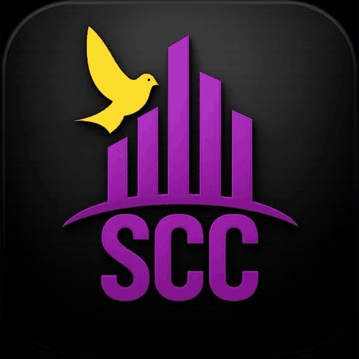

Supernatural City Church is raising Kings, Priests, and Prophets with a burning spirit to establish God's City in every City — through the Person, Presence and Power of the Holy Spirit.

Supernatural City Church is an apostolic ministry committed to raising believers who walk in the supernatural reality of God's Kingdom, building people into Kings, Priests, and Prophets who carry God's Presence into every sphere of society.
Read Our Full StoryEvery service is available in person and across all our online platforms.
Visionary leader of Supernatural City Church, raising supernatural believers through the Word, Prayer, and the Holy Spirit.
Read Full BiographyServing alongside the vision with a passion for discipleship, prayer, women's ministry, and raising godly families.
Read Full BiographyFrom ministry training to prophetic development to women's mentorship — structured platforms to grow deep.
Training for those called to pastoral and ministry leadership.
View ProgrammeA dedicated mentorship space for women, led by Pastor Grace.
View Programme@supernaturalcitychurch on all platforms